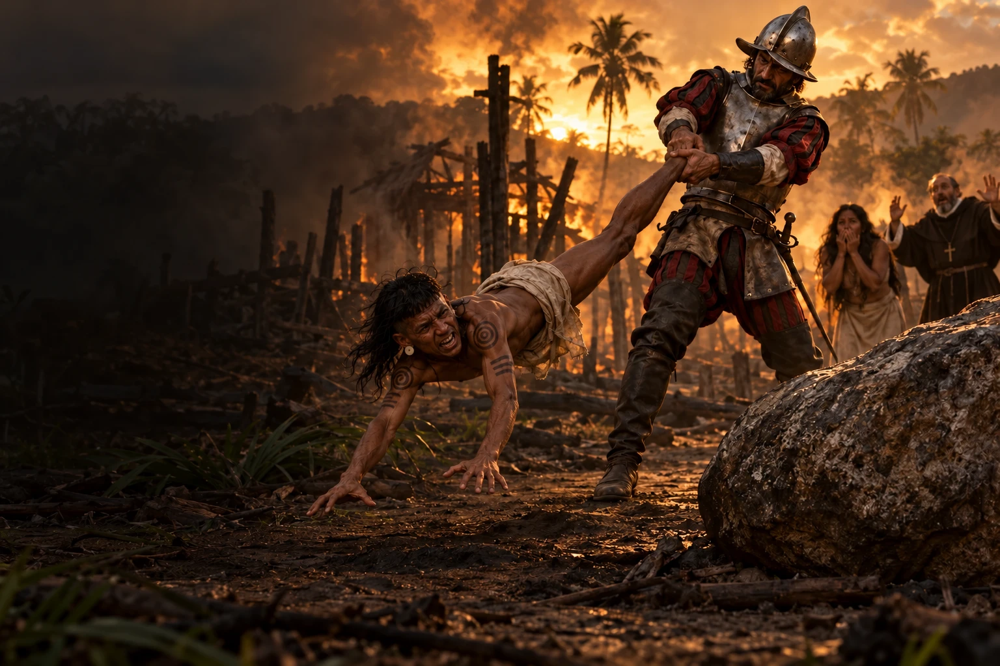
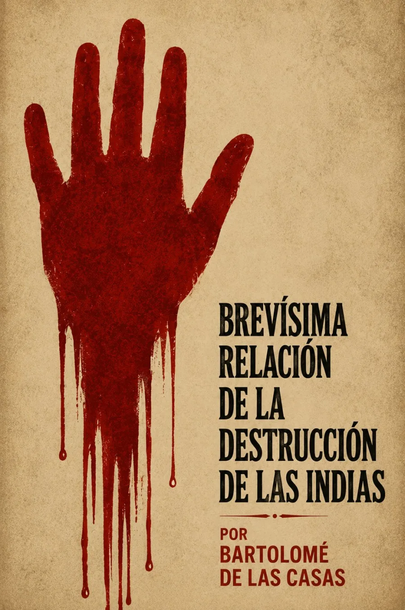

Audiolibros · Segunda Ola
Bartolomé de las Casas · Publicación: 1552
Brevísima
relaciónde la destrucción de las Indias
Que el silencio no sea cómplice.
La violencia exige una respuesta.
El testimonio rompe el silencio.

Escuchar es negarse a apartar la mirada.
Grabación próximamente
Volumen

Una denuncia dirigida al poder
Publicada en Sevilla en 1552, la Brevísima relación lleva ante el príncipe Felipe una exigencia: detener la violencia de las conquistas. Las Casas escribe para provocar una respuesta. La acumulación de daños busca hacer imposible la indiferencia de quien tiene autoridad para intervenir.
Tras los nombres de los territorios hay vidas que la conquista no tiene derecho a borrar.
El libro recorre regiones y reúne denuncias de matanzas, esclavización y despojo. Su lenguaje enfrenta la conducta de los conquistadores con las obligaciones morales que invocan. Es un alegato deliberado: la fuerza de su prosa forma parte de su propósito político y religioso.
La ilustración se detiene ante una violencia inminente. Emplea personajes adultos en una interpretación del terror denunciado por Las Casas; no reproduce literalmente un episodio concreto del libro.
Primera publicación: Sevilla, 1552; versión primitiva: 1542. Edición crítica de José Miguel Martínez Torrejón · Biblioteca Virtual Miguel de Cervantes. Prólogo al príncipe Felipe y notas editoriales.
La lectura
Lectura completa
Grabación próximamente. La lectura de la obra estará disponible aquí. Las grabaciones se incorporarán cuando estén preparadas.
Valoración

Excelente